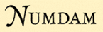
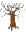

|
About me
Research Associate Professor (特聘副研究员) My research interests lie in number theory, especially elliptic curves, class groups and character sums. |
Experience
|
Research Associate Professor, HFUT |
|
Postdoctoral Fellow, Mentor Yi Ouyang, USTC |
|
Postdoctoral Fellow, Mentor Ye Tian, AMSS CAS |
|
Ph.D. in Mathematics, Advisor Yi Ouyang, USTC |
|
B.S. in Mathematics, USTC |
Research
- On a comparison of rank zero quadratic twists of different elliptic curves
S. Zhang. (2022), preprint.
PDF | Abs
Let $E: y^2=x(x-e_1)(x+e_2)$ be an elliptic curve, where $e_1,e_2,e_3=-e_1-e_2$ are integers. Let $(a,b,c)$ be a primitive triple of odd integers satisfying $e_1a^2+e_2b^2+e_3c^2=0$. Denote by $\mathcal E: y^2=x(x-e_1a^2)(x+e_2b^2)$. Assume that the $2$-Selmer groups of $E$ and $\mathcal E$ are minimal. Let $n$ be a positive odd integer, where the prime factors of $n$ are nonzero quadratic residues modulo each odd prime factor of $e_1e_2e_3abc$. Then under certain conditions, the quadratic twist $\mathcal E^{(n)}$ has Mordell-Weil rank zero and there is no order $4$ element in its Shafarevich-Tate group, if and only if these holds for $E^{(n)}$. We also give some applications for the congruent elliptic curve. - On the quadratic twist of elliptic curves with full $2$-torsion
Z. Wang, S. Zhang. (2022), preprint.
PDF | Abs
Let $E: y^2=x(x-a^2)(x+b^2)$ be an elliptic curve with full $2$-torsion group, where $a$ and $b$ are coprime integers and $2(a^2+b^2)$ is a square. Assume that the $2$-Selmer group of $E$ has rank two. We characterize all quadratic twists of $E$ with Mordell-Weil rank zero and $2$-primary Shafarevich-Tate groups $(\mathbb Z/2\mathbb Z)^2$, under certain conditions. We also obtain a distribution result of these elliptic curves. - On the Newton polygons of twisted $L$-functions of binomials
S. Zhang. Finite Fields Appl. 80 (2022).
PDF | pubPDF | 幻灯片 | Abs
Let $\chi$ be an order $c$ multiplicative character of a finite field and $f(x)=x^d+\lambda x^e$ a binomial with $(d,e)=1$. We study the twisted classical and $T$-adic Newton polygons of $f$. When $p>(d-e)(2d-1)$, we give a lower bound of Newton polygons and show that they coincide if $p$ does not divide a certain integral constant depending on $p\bmod {cd}$.
We conjecture that this condition holds if $p$ is large enough with respect to $c,d$ by combining all known results and the conjecture given by Zhang-Niu. As an example, we show that it holds for $e=d-1$. - On linearity of the periods of subtraction games
S. Zhang. (2021), preprint.
PDF | Abs
The subtraction game is an impartial combinatorial games involving a finite set $S$ of positive integers. The nim-sequence $\mathcal{G}_S$ associated to this game is ultimately periodic. In this paper, we study the nim-sequence $\mathcal{G}_{S\cup\{c\}}$ where $S$ is fixed and $c$ varies. We conjecture that there is a multiplier $q$ of the period of $\mathcal{G}_S$, such that for sufficiently large $c$, the pre-period and period of $\mathcal{G}_{S\cup\{c\}}$ are linear on $c$, if $c$ modulo $q$ is fixed. We prove it in several cases.
We also give new examples with period $2$ inspired by this conjecture. - The generating fields of two twisted Kloosterman sums
S. Zhang. J. Univ. Sci. Technol. China (2022), to appear.
PDF | Abs
In this paper, we study the generating fields of the twisted Kloosterman sums $\mathrm{Kl}(q,a,\chi)$ and the partial Gauss sums $g(q,a,\chi)$. We require that the characteristic pis large with respect to the order dof the character $\chi$ and the trace of the coefficient $a$ is nonzero. When $p\equiv\pm1\bmod d$, we can characterize the generating fields of these character sums. For general $p$, when $a$ lies in the prime field, we propose a combinatorial condition on $(p,d)$ to ensure one can determine the generating fields. - The $3$-class groups of $\mathbb Q(\sqrt[3]p)$ and its normal closure
J. Li, S. Zhang. Math Z. 300 (2022), no. 1, 209-215.
PDF | PubPDF | Abs | Bib
We determine the $3$-class groups of $\mathbb{Q}(\sqrt[3]{p})$ and $K = \mathbb{Q}(\sqrt[3]p, \sqrt{-3})$ when $p\equiv 4, 7 \bmod 9$ is a prime and $3$ is a cube modulo $p$. This confirms a conjecture made by Barrucand-Cohn, and proves the last remaining case of a conjecture of Lemmermeyer on the $3$-class group of $K$.@article {LiZhang2022, AUTHOR = {Li, Jianing and Zhang, Shenxing}, TITLE = {The 3-class groups of {$\mathbb{Q}(\root3p)$} and its normal closure}, JOURNAL = {Math. Z.}, FJOURNAL = {Mathematische Zeitschrift}, VOLUME = {300}, YEAR = {2022}, NUMBER = {1}, PAGES = {209--215}, ISSN = {0025-5874}, MRCLASS = {11R29 (11R16)}, DOI = {10.1007/s00209-021-02797-5}, URL = {https://doi.org/10.1007/s00209-021-02797-5}, } - $\ell$-Class groups of fields in Kummer towers
J. Li, Y. Ouyang, Y. Xu, S. Zhang. Publ. Mat. 66(2022), no. 1, 235--267.
PDF | PubPDF | Abs | Bib
Let $\ell$ and $p$ be prime numbers and $K_{n,m} = \mathbb{Q}(p^{1/\ell^n} , \zeta_{2\ell^m} )$. We study the $\ell$-class group of $K_{n,m}$ in this paper. When $\ell = 2$, we determine the structure of the $2$-class group of $K_{n,m}$ for all $(n, m)\in\mathbb{Z}^2_{\ge0}$ in the case $p=2$ or $p\equiv 3,5 \bmod 8$, and for $(n, m) = (n, 0), (n, 1)$ or $(1, m)$ in the case $p\equiv 7 \bmod 16$, generalizing the results of Parry about the $2$-divisibility of the class number of $K_{2,0}$. We also obtain results about the $\ell$-class group of $K_{n,m}$ when $\ell$ is odd and in particular $\ell = 3$. The main tools we use are class field theory, including Chevalley’s ambiguous class number formula and its generalization by Gras, and a stationary result about the $\ell$-class groups in the $2$-dimensional Kummer tower $\{K_{n,m}\}$.@article {LiOuyangXuZhang2022, AUTHOR = {Li, Jianing and Ouyang, Yi and Xu, Yue and Zhang, Shenxing}, TITLE = {{$\ell$}-class groups of fields in {K}ummer towers}, JOURNAL = {Publ. Mat.}, FJOURNAL = {Publicacions Matem\`atiques}, VOLUME = {66}, YEAR = {2022}, NUMBER = {1}, PAGES = {235--267}, ISSN = {0214-1493}, DOI = {10.5565/publmat6612210}, URL = {https://doi.org/10.5565/publmat6612210}, } - The distinctness and generating fields of twisted Kloosterman sums
S. Zhang. (2021), preprint.
PDF | Slide & 幻灯片 | Abs
We use the Kloosterman sheaves constructed by Fisher to show when two Kloosterman sums differ a $(q−1)$-th root of unity, and use $p$-adic analysis to prove the non-vanishing of the Kloosterman sums. Then we can determine the generating fields by these results. - The virtual periods of linear recurrence sequences in cyclotomic fields
S. Zhang. arXiv: 2010.08342 (2020).
PDF | arXivPDF | Abs
A linear recurrence sequence in a cyclotomic field produces a sequence of the generating fields of each term. We show that the later sequence is periodic after removing the first finite terms, and give a bound of its period. This can be applied to exponential sums. - Birch's lemma over global function fields
Y. Ouyang, S. Zhang. Proc. Amer. Math. Soc. 145 (2017), no. 2, 577-584.
PDF | PubPDF | Abs | Bib
We obtain a function field version of Birch’s Lemma, which reveals non-torsion points in quadratic twists of an elliptic curve over a global function field, where the quadratic twists have many prime factors. The proof is based on Brown’s Euler system for Heegner points of function fields and Vigni’s result.@article {OuyangZhang2017, AUTHOR = {Ouyang, Yi and Zhang, Shenxing}, TITLE = {Birch's lemma over global function fields}, JOURNAL = {Proc. Amer. Math. Soc.}, FJOURNAL = {Proceedings of the American Mathematical Society}, VOLUME = {145}, YEAR = {2017}, NUMBER = {2}, PAGES = {577--584}, ISSN = {0002-9939}, MRCLASS = {11G05 (11D25 11G40 14H52)}, DOI = {10.1090/proc/13265}, URL = {https://doi.org/10.1090/proc/13265}, } - Newton polygons of $L$-functions of polynomials $x^d+ax^{d-1}$ with $p\equiv -1\bmod d$
Y. Ouyang, S. Zhang. Finite Fields Appl. 37 (2016), 285-294.
PDF | PubPDF | Abs | Bib
For prime $p\equiv−1\bmod d$ and $q$ a power of $p$, we obtain the slopes of the $q$-adic Newton polygons of $L$-functions of $x^d+ax^{d−1}\in\mathbb{F}_q[x]$ with respect to finite characters $\chi$ when $p$ is larger than an explicit bound depending only on $d$ and $\log_pq$. The main tools are Dwork’s trace formula and Zhu’s rigid transform theorem.@article {OuyangZhang2016, AUTHOR = {Ouyang, Yi and Zhang, Shenxing}, TITLE = {Newton polygons of {$L$}-functions of polynomials {$x^d+ax^{d-1}$} with {$p\equiv-1\mod d$}}, JOURNAL = {Finite Fields Appl.}, FJOURNAL = {Finite Fields and their Applications}, VOLUME = {37}, YEAR = {2016}, PAGES = {285--294}, ISSN = {1071-5797}, MRCLASS = {11T06}, DOI = {10.1016/j.ffa.2015.10.003}, URL = {https://doi.org/10.1016/j.ffa.2015.10.003}, } - On second 2-descent and non-congruent numbers
Y. Ouyang, S. Zhang. Acta Arith. 170 (2015), no. 4, 343-360.
PDF | PubPDF & Errata | Abs | Bib
We use the so-called second $2$-decent method to find several series of non-congruent numbers. We consider three different $2$-isogenies of the congruent elliptic curves and their duals, and find a necessary condition to estimate the size of the images of the $2$-Selmer groups in the Selmer groups of the isogeny.@article {OuyangZhang2015, AUTHOR = {Ouyang, Yi and Zhang, Shenxing}, TITLE = {On second 2-descent and non-congruent numbers}, JOURNAL = {Acta Arith.}, FJOURNAL = {Acta Arithmetica}, VOLUME = {170}, YEAR = {2015}, NUMBER = {4}, PAGES = {343--360}, ISSN = {0065-1036}, MRCLASS = {11G05 (11D25)}, DOI = {10.4064/aa170-4-3}, URL = {https://doi.org/10.4064/aa170-4-3}, } - On non-congruent numbers with 1 modulo 4 prime factors
Y. Ouyang, S. Zhang. Sci. China Math. 57 (2014), no. 3, 649-658.
PDF | PubPDF | Abs | Bib
In this paper, we use the $2$-decent method to find a series of odd non-congruent numbers $\equiv1\pmod 8$ whose prime factors are $\equiv1\pmod4$ such that the congruent elliptic curves have second lowest Selmer groups, which includes Li and Tian’s result [LT00] as special cases.@article {OuyangZhang2014, AUTHOR = {Ouyang, Yi and Zhang, ShenXing}, TITLE = {On non-congruent numbers with 1 modulo 4 prime factors}, JOURNAL = {Sci. China Math.}, FJOURNAL = {Science China. Mathematics}, VOLUME = {57}, YEAR = {2014}, NUMBER = {3}, PAGES = {649--658}, ISSN = {1674-7283}, MRCLASS = {11G05 (11D25)}, DOI = {10.1007/s11425-013-4705-y}, URL = {https://doi.org/10.1007/s11425-013-4705-y}, }
Here are some notes.
- The curve and $p$-adic Hodge theory
Laurent Fargus, 2019/11/01 - 2020/01/10, MCM Beijing
PDF | Abs
The main theme of this course will be to understand and give a meaning to the notion of a $p$-adic Hodge structure. Starting with the work of Fontaine, who introduced many of the basic notions in the domain, it took many years to understand the exact definition of a $p$-adic Hodge structure. We now have the right definition: this involves the fundamental curve of $p$-adic Hodge theory and vector bundles on it. In the course I will explain the construction and basic properties of the curve. I will moreover explain the proof of the classification of vector bundles theorem on the curve. As an application I will explain the proof of weakly admissible implies admissible. In the meanwhile I will review many objects that show up in $p$-adic Hodge theory like $p$-divisible groups and their moduli spaces, Hodge-Tate and de Rham period morphisms, and filtered $\phi$-modules. - $p$-adic abelian integrals
Pierre Colmez, 2016/09/14 - 2016/10/26, BICMR Beijing
PDF | Abs
The study of complex abelian integrals, i.e., integrals of algebraic functions of one complex variable, was a major incentive to develop complex algebraic geometry (some 150 years ago). After briefly explaining the complex theory, I will study its analog in the $p$-adic world: this provides a concrete introduction to $p$-adic Hodge theory, a theory that was originated by Tate some 50 years ago and was turned into one of most powerful tools of number theory.
Teaching
教学中
2022年春 数学（下） 034Y01
- 教材：朱士信 唐烁《高等数学》上册
- 日期：2022/02/28-2022/06/06
- 时间：周一 8:10-10:00，周三 10:20-12:10，周五 8:10-10:00
- 地点：翡翠湖校区 翠八教301
- 课件：📖第一章, 第二章, 3.1, 3.2, 3.3, 3.3(pdf), 3.4, 3.4(pdf), 3.5, 3.5(pdf), 习题课3
- 课程精讲：🎥1, 2, 3
教学
助教
- 2021年秋 概率论与数理统计 📖第5-6章课件
- 2021年夏 线性代数 (清华丘成桐中学生数学夏令营) 📝作业
- 2019年夏 代数与数论 (中国科学院数学与系统科学研究院暑期学校)
📖代数数论I讲义 📖代数数论II讲义 📖群表示论讲义 📖代数几何讲义 - 2016年春 初等数论 📝试卷 📏习题课
- 2013年春 近世代数 📝试卷
- 2012年秋 代数学基础 📝试卷 📏习题课
- 2011年秋 近世代数 📝试卷
- 2011年春 复变函数 📝试卷
Links
| 📝 丘成桐大学生数学竞赛 (Yau CSMC) 2010-2017年和部分2018年试题 |
| 📗 10000 个科学难题·数学卷 |
| 📘 一份不太简短的 $\LaTeX2\varepsilon$ 介绍 6.02版 推荐使用 TeX Live 或 MiKTeX 自带的编辑器 TeXworks |
| 📘 XYpic中文简介 更详细的中文介绍请参考《LaTeX入门与提高》§12.4 |
| 📘 李文威: 数学写作漫谈 |
| 📘 李文威: 教学实践：经验、反思与构想 |
| 📘 How to Give a Good Colloquium - John E. McCarthy |
|  NUMDAM | DigiZ | Z-Library | MathSciNet |
|
|
MSC2020 | LetPub | LMFDB |
|  Math Genealogy |
 MathOverflow
MathOverflow
|
|
 GitHub
GitHub
|
| 原版模组更多的合成 | 原版模组入门教程 | ||